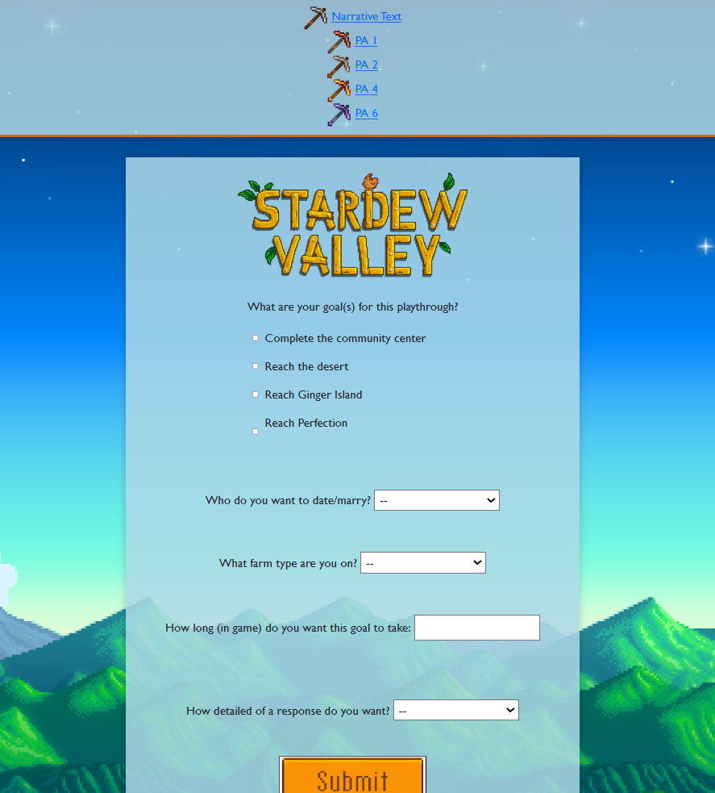

AR Game
This AR Game was a project I worked on with three other students. We made a platform game based on a simplified version of Theseus and the Minotaur. Once the player escaped the maze, they would show a card to the camera to try different weapons to see which would defeat the Minotaur, and allow the player to escape/win the game. This project was a great way to learn how to work on big projects with others as well as the struggles of working on a project without strict guidelines.
Interactive Comic
For this project two other students and I had to make an interactive comic book exploring the concept of whether or not our universe is real or a simulation. This was the first collaborative project I was the lead on so I learned a lot about running a team. As well as learning more about coding in C#, voice acting, audio editing, and video editing.

GIMM 260 Website
This website will allow the user to input their goals for a Stardew Valley playthrough, place those inputs into a prompt which will be sent to openAI, and then print the result from the AI on the site. I learned so much about HTML coding and client/server communication. Designing this project to look as close to the Stardew Valley Wikipedia was very fun.